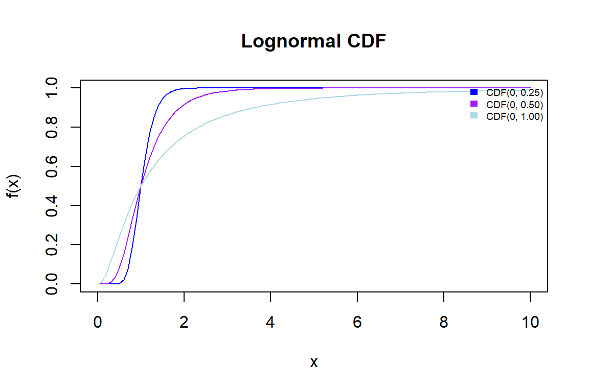

The lognormal distribution is a continuous probability distribution that can only take positive values. It describes the distribution of a random variable \(X\) if the random variable \(Y = ln(X)\) transformed by the logarithm is normally distributed.
The lognormal distribution is often used to model phenomena in which the logarithmized values of the data follow a normal distribution, while the actual data itself has a non-normal distribution.
Probability Density Function (PDF)
The probability density function of the lognormal distribution is defined by
\[\begin{equation} \tag{1.1} f(x) = \frac{1}{x\sigma \sqrt{2\pi}} e\left(-\frac{(\ln(x) - \mu)^2}{2\sigma^2}\right) \end{equation}\]
where \(x\) is the random variable, \(\mu\) is the mean of the logarithmic distribution, and \(\sigma\) is the standard deviation of the logarithmic distribution.
Figure 1: Lognormal Probability Density Functions (PDF) with varying standard deviations
Cumulative Distribution Function (CDF)
The Cumulative Distribution Function (CDF) of the lognormal distribution is as follows:
\[\begin{equation} \tag{1.2} F(x) = \int_{0}^{x} f(t) dt = \Phi (\frac{ln(x)-\mu}{\sigma}) \end{equation}\]
where \(\Phi\) denotes the distribution function of the standard normal distribution.

Figure 2: Lognormal Cumulative Density Functions (CDF) with varying standard deviations
Relationship between normal and lognormal distribution
If \(Y = \mu + \sigma Z\) is normal distributed, then \(X\sim e^{Y}\) is lognormal distributed.

Figure 3: Normal distribution vs. lognormal distribution (inspired by figure from Wikipedia)
Median
The median of the lognormal distribution is:
\(\large x_{med}=e^{\mu}\)
The median is the middle value when a data set is ordered from least to greatest.
Mean
The mean of the lognormal distribution is:
\(\large m = e^{\mu + {\frac {\sigma ^{2}}{2}}}\)
The mean (average) of a data set is found by adding all numbers in the data set and then dividing by the number of values in the set. The mean of the lognormal distribution is equal to the expected value.
Mode
The mode (the most frequent value of the distribution) of the lognormal distribution is:
\(\large Modus(X) = x_{D} = e^{\mu -\sigma ^{2}}\)
The mode is the number that occurs most often in a data set.
Expected Value
The expected value of the lognormal distribution is:
\(\large E(X) = e^{\mu + {\frac {\sigma ^{2}}{2}}}\)
Where \(μ\) is the mean value and \(σ\) is the standard deviation of the lognormal distribution.
The expected value of a lognormal distribution is a key figure that indicates the central tendency value of the distribution. It is important to note that the expected value of a lognormal distribution is generally greater than the median (the 50th percentile value) of the distribution. This is because the lognormal distribution has a positive skewness (right-skewed), which means that it tends to have higher values.
Variance
The variance of the lognormal distribution is:
\(\large Var(X) = e^{2\mu +\sigma^2} (e^{\sigma^2}-1)\)
Standard deviation
The standard deviation of the lognormal distribution is:
\(\large \sqrt Var(X)\)
Skewness
The lognormal distribution is skewed to the right. The greater the difference between the expected value and the median, the more pronounced the skewness of the lognormal distribution.
Figure 4: Comparison of mean value, median, and mode
Example 1: US Income 2006
The graph below shows the distribution of US income in 2006. It illustrates how the location parameter is the median of this distribution. The shaded area represents 50% of the distribution, which corresponds to the median value of 28,788. The value is calculated by taking e and increasing it by the location value. In this case, \(e^{10.2677} = 28,788\).
Note
The 2009 paper by Pinkovskiy and Sala-i-Martin is entitled “Parametric Estimations of the World Distribution of Income”. It is an econometric study in which the authors attempt to analyze the global distribution of income using parametric estimation.
The authors use a method based on the assumption that the distribution of income follows a lognormal distribution. They estimate the parameters of this distribution and use the results to quantify the global distribution of income.
Example 2: Lifetime of an engine
Suppose the lifetime of an engine has a lognormal distribution. What is the probability that the lifetime will exceed 12,000 hours if the mean and standard deviation of the underlying normal distribution are 11,000 hours and 1.3 hours respectively.
12345


Probability that the lifetime exceeds 12,000 hours: 0.8918476